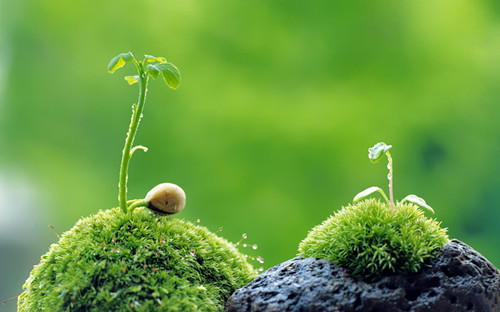

您当前的位置：
您当前的位置：
换一个角度，换一种活法
发布时间：2017-03-08 编辑：上善若水 阅读
有这样一段对话：老和尚问小和尚：如果你跨前一步是死，退后一步是亡，你怎么办？
小和尚毫不犹豫地说：我往旁边去。
是的，路并非只能向前向后，当进退两难，你要换一个角度，换一种活法。
有这样一个故事：一片还很青翠很靓丽的树叶，在一阵狂风中，被无情割落，可怜飘向地面……。
难道就这样过早结束生命，化为淤泥？树叶在飘落中痛苦挣扎着，思考着，抗争着……。她借助着风，努力飞舞，寻找延续生命的机会。
终于，她停在一位少女的脚下，被少女捡起。少女以欣赏、怜爱之心，将树叶制成美丽的书签。树叶保全了生命的脉络，从此与文字相伴，和墨香相依，生命得以重生。

是的，生命有多种方式，当遭遇灾难，你要换一个角度，换一种活法。
有这样一个人物：
世界级文学大师、现代派文学的开山鼻祖卡夫卡，从小性格孤僻，沉默寡言，懦弱胆怯，多愁善感，总喜欢一个人躲在角落里发呆。父亲对他很不满意，后来对他彻底失去信心，索性不再管他，任他自生自灭。在父亲的眼里，他是一个彻头彻尾的懦夫，一个毫无前途可言的可怜虫。但卡夫卡在父亲一次次的伤害中，学会了察言观色，学会了承受和忍耐，也体会到了生活的痛苦与无奈。更令人震惊的是，一次偶然的机会，他走上了文学创作的道路，他把对生活的敏感，怯懦的性格，孤僻忧郁的气质，难以排遣的孤独和危机感，无法克服的荒诞和恐惧，融入到小说之中，形成独特绚丽的风格，成为那个时代资本主义社会的精神写照。他的《变形记》、《判决》、《城堡》等作品享誉全球，经久不衰，成为奥地利最富盛名的作家。卡夫卡的成功告诉人们，有些东西无法改变，比如，性格，容貌，高矮等，对于这些与生俱来的缺陷，没有必要去改变它，更不要为此懊恼和自卑。每个人都有自己的优点，但也都有自己的缺陷，与其抱怨上天对自己的不公，不如去寻找一片适合自己生长的土地。
是的，生命各有各的精彩，当劣势已无法改变，你要换一个角度，换一种活法。
有无数现实的例子：
似乎是生活的弱者，在经历生活艰辛，高考落第，就业被拒，到处碰壁的一系列失败后，终于另辟蹊径，成为生活的强者，获得人生的成功，绽放生命的美丽。
是的，生活的道路很多，当前面的路走不了，你要懂得拐道，换一个角度，换一种活法。
岁月荏苒，“人生不完满是常态，而圆满则是非常态”，面对挫折，只要换个角度去思考，去观察，就会发现，生活所展现的，并不是通常感觉那么阴黎漫天，那么没有希望；只要眼睛能越过障碍，心能放下当下，开阔视野，转变观念，改变生活方式，再悲惨的生活也会峰回路转，再痛苦的人生也会柳暗花明。你的生命，也将因改变而精彩！
关键字词: 换个角度 心态 信心
上一篇：说给昨天的今天的明天的我们自己
下一篇：当年华未曾老去